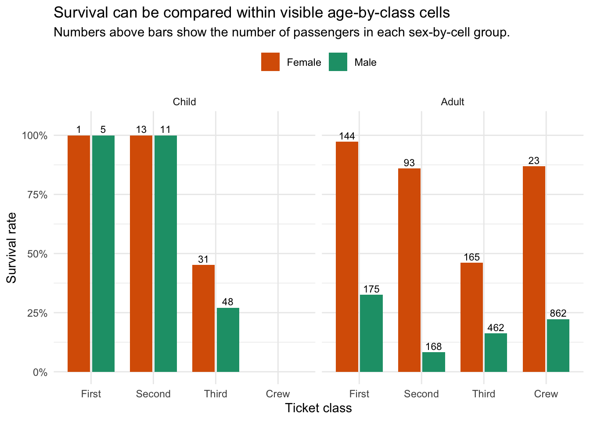

| Group | N | Survival rate | First-class share | Crew share | Child share |
|---|---|---|---|---|---|
| Female | 470 | 73.2% | 30.9% | 4.9% | 9.6% |
| Male | 1731 | 21.2% | 10.4% | 49.8% | 3.7% |
Lab: Titanic Teaching Example
1 How To Use This Page
This lab turns the Titanic scaffold into a compact executed example for exact matching and propensity-score subclassification.
Note
This is a teaching example, not a literal policy-evaluation design. The value of causaldata::titanic is that the treatment groups, covariates, and support cells are easy to see on one page.
2 Design Choice
For a slide-friendly matching example, keep the setup deliberately simple:
- Treatment:
sex, coded here as female versus male - Outcome:
survived - Pre-treatment covariates: ticket
classandage - Teaching estimand:
ATTfor the female group
This choice keeps the design transparent. There are only two adjustment variables, both are discrete, and the implied exact-match cells are easy to inspect directly before using any propensity-score machinery.
3 Dataset At A Glance
In this local installation, causaldata::titanic contains 2,201 passenger records with four variables: class, age, sex, and survived.
The table below shows the raw comparison before any design adjustment.
Women survive at a much higher rate than men in the raw data, but women are also less concentrated in the crew and somewhat more concentrated in the higher-status passenger classes. That makes this a useful classroom example for separating the raw contrast from the adjusted one.
4 Support Cells Before Matching
There are 8 possible age-by-class cells. 7 are observed in the data, and all 7 observed cells contain both women and men. The only empty cell is Crew x Child.

| Ticket class | Age | Women | Men | Women’s survival | Men’s survival | Gap (women - men) | Overlap |
|---|---|---|---|---|---|---|---|
| First | Child | 1 | 5 | 100.0% | 100.0% | 0.0% | Both groups observed |
| Second | Child | 13 | 11 | 100.0% | 100.0% | 0.0% | Both groups observed |
| Third | Child | 31 | 48 | 45.2% | 27.1% | 18.1% | Both groups observed |
| Crew | Child | 0 | 0 | - | - | - | Empty cell |
| First | Adult | 144 | 175 | 97.2% | 32.6% | 64.7% | Both groups observed |
| Second | Adult | 93 | 168 | 86.0% | 8.3% | 77.7% | Both groups observed |
| Third | Adult | 165 | 462 | 46.1% | 16.2% | 29.8% | Both groups observed |
| Crew | Adult | 23 | 862 | 87.0% | 22.3% | 64.7% | Both groups observed |
This is why Titanic works well in teaching. You can inspect the exact cells first and see that exact matching is feasible before fitting a propensity model.
5 Exact Matching
Exact matching on class and age is almost the ideal first demonstration here:
- every observed female passenger has at least one male comparison unit in the same cell
- the matched sample achieves exact balance on the design covariates
- the estimand remains easy to explain because the cells are visible
| Covariate | Raw |SMD| | Exact |SMD| | Subclass |SMD| |
|---|---|---|---|
| First class | 0.443 | 0.000 | 0.018 |
| Second class | 0.292 | 0.000 | 0.002 |
| Third class | 0.248 | 0.000 | 0.015 |
| Crew | 2.081 | 0.000 | 0.000 |
| Child | 0.200 | 0.000 | 0.030 |
| Adult | 0.200 | 0.000 | 0.030 |
The exact-matching column is all zeros because the design conditions directly on the full set of observed covariates.
6 Propensity-Score Subclassification
Subclassification is useful here as a bridge to higher-dimensional problems. With only two discrete covariates it does not buy much over exact matching, but it shows how a propensity-score design can recover almost the same adjusted comparison while relaxing the requirement that each design cell be used literally.
| Subclass | Women | Men |
|---|---|---|
| 1 | 23 | 862 |
| 2 | 165 | 462 |
| 3 | 124 | 216 |
| 4 | 158 | 191 |
All four subclasses retain both women and men, and the adjusted balance remains well below the 0.1 standardized-difference benchmark on every covariate.
7 Comparison Of Estimates
| Design | Estimated gap | 95% CI | Treated retained | Control ESS |
|---|---|---|---|---|
| Raw comparison | 52.0% | 47.7% to 56.2% | 100.0% | 1731.0 |
| Exact matching | 50.0% | 45.7% to 54.4% | 100.0% | 833.3 |
| Subclassification | 50.3% | 45.9% to 54.6% | 100.0% | 845.0 |
The key teaching result is that adjustment changes the estimate only modestly:
- raw difference: 52.0 percentage points
- exact matching: 50.0 percentage points
- subclassification: 50.3 percentage points
That is a useful contrast with higher-dimensional matching examples. Here, the adjustment task is so transparent that the class-by-age structure already explains most of what the design is doing.
8 Slide-Friendly Summary
- Start with the cell structure. Titanic is useful because you can inspect the exact comparison cells directly.
- Exact matching is feasible here because the covariates are low-dimensional and discrete.
- Subclassification reaches nearly the same adjusted estimate, which makes it a clean bridge to settings where exact matching becomes too restrictive.
- This is still a pedagogic example rather than a literal causal treatment effect, because
sexis not a manipulable intervention and important determinants of survival are not observed.